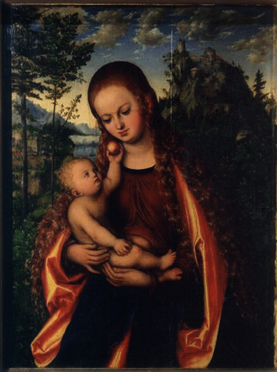

W czasie II wojny światowej Niemcy prowadziły nie tylko militarną inwazję na Polskę, ale także dokonywała szeroko zakrojonego rabunku dziedzictwa kulturowego. Jednym z najbardziej rażących przykładów tego barbarzyństwa było skradzenie tysięcy cennych dzieł sztuki z polskich muzeów, pałaców i prywatnych kolekcji. Ten systematyczny grabieżczy proceder miał na celu zarówno deprawację polskiego dziedzictwa narodowego, jak i wzmocnienie kultury nazistowskiej. Skradzione obrazy stały się symbolem nie tylko zniszczenia materialnych dóbr, lecz także zranienia narodowej tożsamości i pamięci. W niniejszym przedstawieniu przyjrzymy się historii tych skarbów, a także ich długiemu powojennemu losowi, odkrywając wielowątkową historię związaną z ich zaginięciem i próbami ich odzyskania.
 Józef Brandt (1841-1915), "Wyjazd na polowanie", koniec XIX w.
Józef Brandt (1841-1915), "Wyjazd na polowanie", koniec XIX w.Obraz "Wyjazd na polowanie" do II wojny światowej znajdował się w Muzeum Śląskim w Katowicach. Po wkroczeniu wojsk niemieckich zbiory przewieziono do Landesmuseum w Bytomiu. Podczas transportu wiele dzieł rozgrabiono lub zniszczono. Pod koniec wojny dobra kultury z Bytomia lokowano w okolicznych klasztorach i pałacach. Ich dalszy los jest nieznany.
 Lucas Cranach Starszy (1472-1553), "Madonna z Dzieciątkiem, zw. Głogowską"
Do czasów II wojny światowej w kolegiacie głogowskiej na Dolnym Śląsku znajdował się bardzo cenny obraz "Madonny z Dzieciątkiem" pędzla Łukasza Cranacha Starszego. Opisywany jest najczęściej jako "Madonna Głogowska" i sygnowany charakterystycznym dla Cranacha znakiem "skrzydlatego smoka". Postacie Madonny i Dzieciątka pozbawione są atrybutów świętości, przedstawiono je w naturalnych pozach, wyrażających ciepło macierzyństwa. Ksiądz Heinrich Werner, ostatni niemiecki proboszcz w Głogowie pisze: "Madonna Łukasza Cranacha została już w 1943 r. wywieziona dla bezpieczeństwa do Henrykowa, a stamtąd do Lądka Zdroju, gdzie ostatecznie wpadła w ręce Rosjan w 1945". 4 czerwca 1945 obraz został zarekwirowany przez majora Mossewa. Po 2000 roku reprodukcja pojawiła się na stronie internetowej Państwego Muzeum Sztuki im. A.S. Puszkina w Moskwie. O zwrot obrazu strona polska stara się od 2004. W tym samym Muzeum znajdują się inne obrazy wywiezione z Polski w czasie wojny - "Pejzaż Leśny" Jana Brueghela Starszego oraz "Podwórko z drobiem" Daniela Schultza.